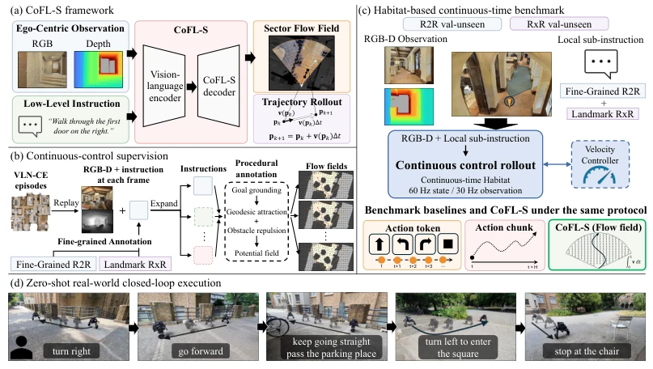
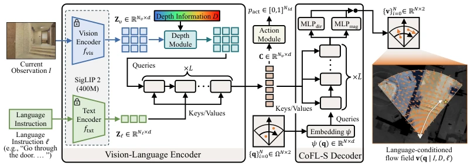
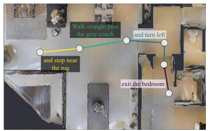
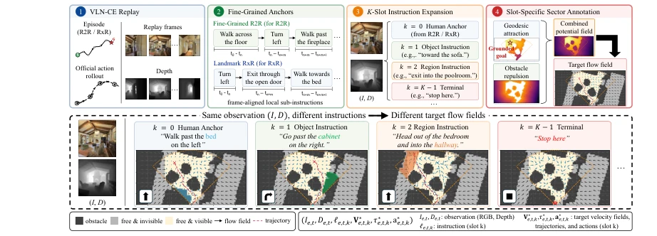
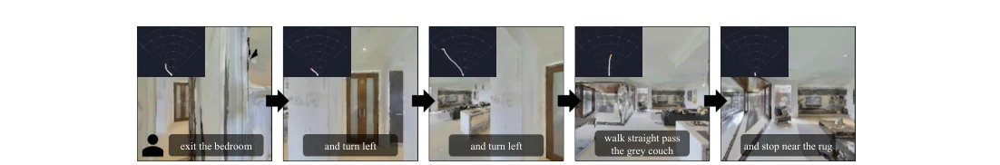
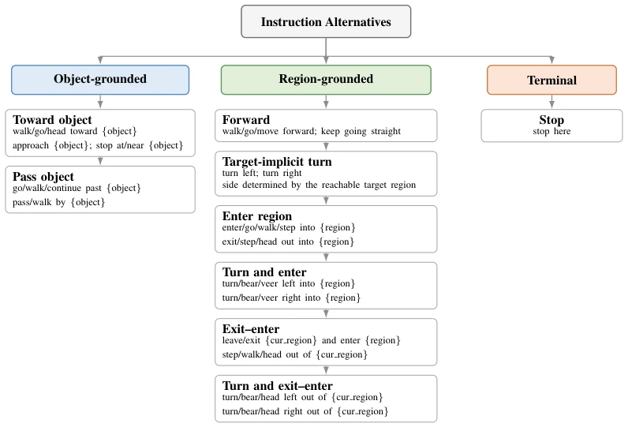
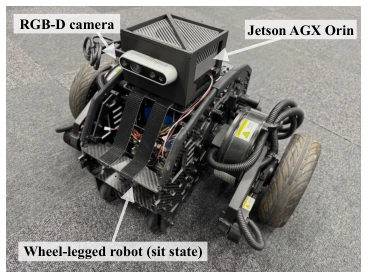
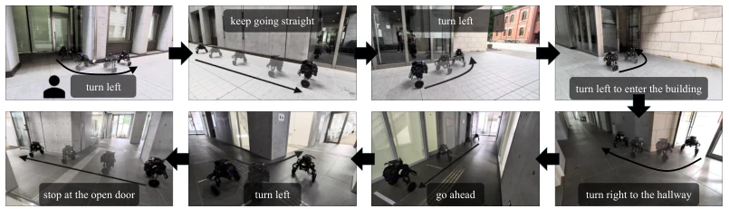

This paper attempts to address the neglected "last mile" problem in VLN—low-level action execution. The authors strip away fancy high-level planning, focusing on using Flow Fields to map local instructions to continuous control. To be frank, Flow Fields are not new in navigation, but embedding them into an Ego-centric RGB-D perspective combined with language conditions is quite interesting. However, it assumes "local sub-instructions" already exist, which is equivalent to passing the hardest long-horizon planning problem to others, while only being responsible for "how to walk steadily". The experimental part performs well in both simulation and real robots, especially in collision avoidance, but inference latency is significantly higher than baselines; 5Hz closed-loop is tolerable, but higher is estimated to become laggy. Overall, it is a solid low-level actuator improvement, but do not expect it to tackle the entire navigation task alone.
Existing VLN research (e.g., R2R [1], RxR [2], VLN-CE [3]) is mostly preoccupied with high-level semantic understanding, memory construction, and instruction decomposition, yet ignores how low-level action representations are specifically converted into robot motion. Traditional discrete actions (e.g., forward/turn) or Action Chunks can only specify current state actions or limited future sequences, unable to explicitly describe how motion changes with surrounding spatial positions and obstacle configurations [10, 13]. Potential fields or flow fields in classic navigation methods provide a spatial indexing perspective, but existing learned flow field strategies mostly assume global BEV observations, ignoring embodied robots' partial observability and onboard sensor limitations [32]. Therefore, a low-level interface is needed that can directly generate spatially queryable control fields from first-person RGB-D observations and local instructions, to decouple high-level reasoning and low-level execution, and evaluate the impact of the action interface itself on navigation performance.

Figure 1: Overview of CoFL-S. CoFL-S learns an ego-centric sector flow field from RGB-D ob- servations and local language instructions, and extracts continuous control through field rollout. The framework is trained with dense sector flow field supervision and evaluated on a Habitat-based benchmark built from R2R/RxR episodes and zero-shot real-world closed-loop execution.
The overall flow of CoFL-S maps local instructions and RGB-D observations to language-conditioned flow fields for robot-visible sectors. First, a frozen SigLIP2 encoder is used to extract visual and text tokens, and the depth map injects geometric information via convolution and FiLM modulation. The fused context tokens are input to a query-based Transformer decoder. The key innovation lies in the "Sector Flow Field" representation: mapping the local ground plane to normalized polar coordinate sectors Ω, where the decoder queries each coordinate point q to predict a Cartesian velocity vector. During training, VLN-CE replay data is utilized, combined with fine-grained annotations (Fine-Grained R2R [8], Landmark RxR [9]) to generate frame-level local sub-instructions, and potential fields containing geometric attraction and obstacle repulsion are constructed as dense supervision targets. During inference, the flow field grid is cached, velocity is obtained via bilinear interpolation, and integrated to generate continuous trajectories. Additionally, there is a lightweight action module used to predict STOP termination probability. This design allows the policy to output spatially queryable control fields rather than single actions, facilitating the generation of smooth trajectories via rollout at different planning frequencies.

Figure 2: Overview of CoFL-S architecture. A vision-language encoder and query-based sector decoder map RGB-D observations and local instructions to a spatially queryable sector flow field.
Experiments are conducted on a Habitat-based continuous-time benchmark, which converts VLN-CE segments to frame-level sub-instruction alignment, with all methods sharing controllers and observations. Baselines include Action Token and Action Chunk. Results show that CoFL-S outperforms baselines in SR and SPL at different planning frequencies of 2/5/10Hz, and has a lower Blocked-Step Rate (BSR), indicating stronger geometric perception. Ablation experiments indicate that instruction diversity and depth modulation are effective. In real-robot zero-shot tests (indoor/outdoor/mixed), CoFL-S has the highest success rate and fewest collisions; although inference latency is higher (~143ms vs ~93ms), the 5Hz closed-loop remains stable. This indicates that flow field representations are more robust than discrete actions in cross-domain transfer and can better couple semantic and geometric constraints.

Figure 9: Example of local sub-instruction alignment.
其他图片Other Figures

Figure 4: Overview of the continuous-control supervision augmentation. Each replayed VLN-CE frame is aligned with a fine-grained human anchor and expanded into K local instruction slots. The slots share the same RGB-D observation but induce different local goals and target trajectories and flow fields, generated by combining geodesic attraction with obstacle/invisible-region repulsion.

Figure 6: Qualitative snapshots of CoFL-S executing a task sequence in R2R-CE, composed of fine- grained sub-instructions in a Habitat environment [21]. For each step, we visualize the RGB obser- vation, the aligned local instruction (illustration of alignment is shown in Fig. 9), and the predicted trajectory integrated from the sector flow field. More examples are provided in Appendix D.1.4.

Figure 8: Hierarchy of template families used for instruction expansion. Object-grounded templates are grounded by visible objects, region-grounded templates by reachable visible regions, and termi- nal templates by the current agent location.

Figure 12: Overview of the hardware setup.

Figure 14: Qualitative snapshots of CoFL-S executing a human-assigned local-instruction sequence in a teaching building. For each step, we visualize the RGB observation and the assigned local instruction.